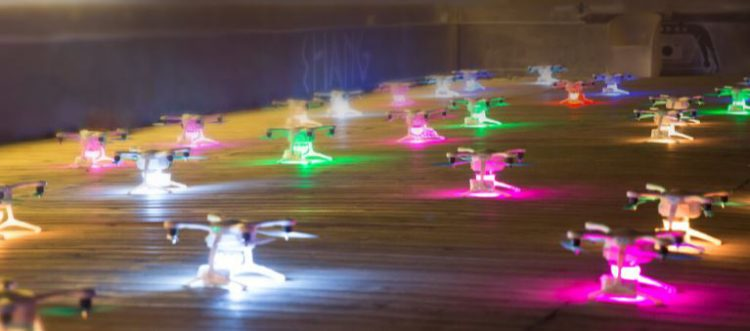
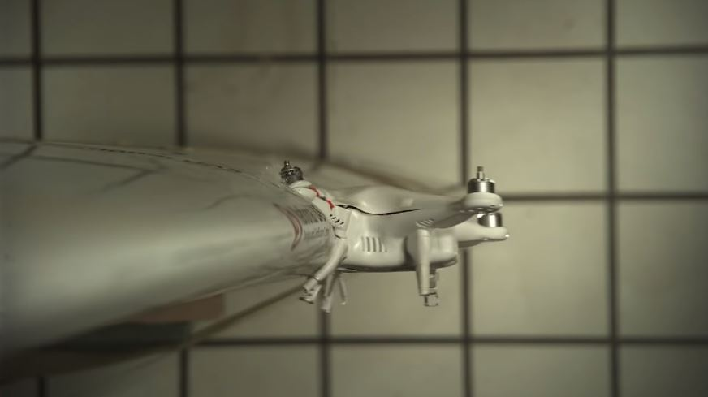

OSTATANIE AKTUALNOŚCI
30 PAŹDZIERNIKA STARTUJE KONFERENCJA DJI AIRWORKS 2018

Konferencja DJI AirWorks 2018 potrwa trzy dni od 30.10. do 1.11.2018, a odbędzie się w Dallas (Texas, USA). Polskę będzie reprezentować spółka NaviGate z Krakowa – partner DJI Enterprise.
CO SIĘ STANIE, GDY DRON UDERZY W SKRZYDŁO SAMOLOTU?

Na to tytułowe pytanie postanowili odpowiedzieć naukowcy z Instytutu Badawczego Uniwersytetu w Dayton (Ohio, USA). Wraz ze specjalistami z Centrum Szkolenia i Certyfikacji UAS w Sinclair College National przeprowadzili testy zderzeniowe drona typu DJI Phantom 2 (bez gimbala i kamery) ze skrzydłem samolotu Mooney M20. Efekt był taki, że „ptak” uszkadza przede wszystkim blachę na krawędzi natarcia skrzydła – nie narusza natomiast konstrukcji wewnętrznej skrzydła co jest istotne dla dalszego przebiegu lotu i ewentualnego awaryjnego lądowania samolotu w obu przypadkach.
REKLAMA
SOCIAL MEDIA